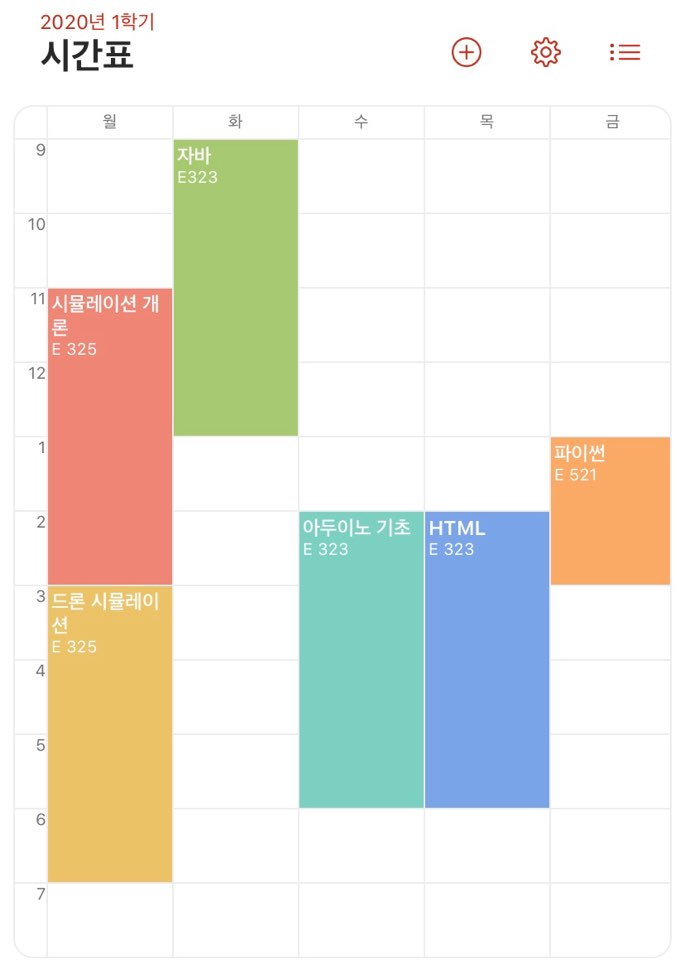

HM06 박종혁
☜클릭시 Github로 이동
Home
My Daily
My Best 3
FootBall Club
Christmas
About Corona
Clock
My GPS
HM06 주말시간표
오전
오후
9:00~10:00
기상 and 아침식사
12:00~13:00
점심식사
10:00~11:00
빈둥거리기
13:00~14:00
빈둥거리기
11:00~11:30
잠깐 운동하기
14:00~17:00
축구하기
11:30~12:00
집 청소하기
17:00~18:00
씻고 TV보기
18:00~19:00
저녁식사
19:00~22:00
나만의시간
2020년 Dron IOT Simulation 학부 박종혁의 시간표
